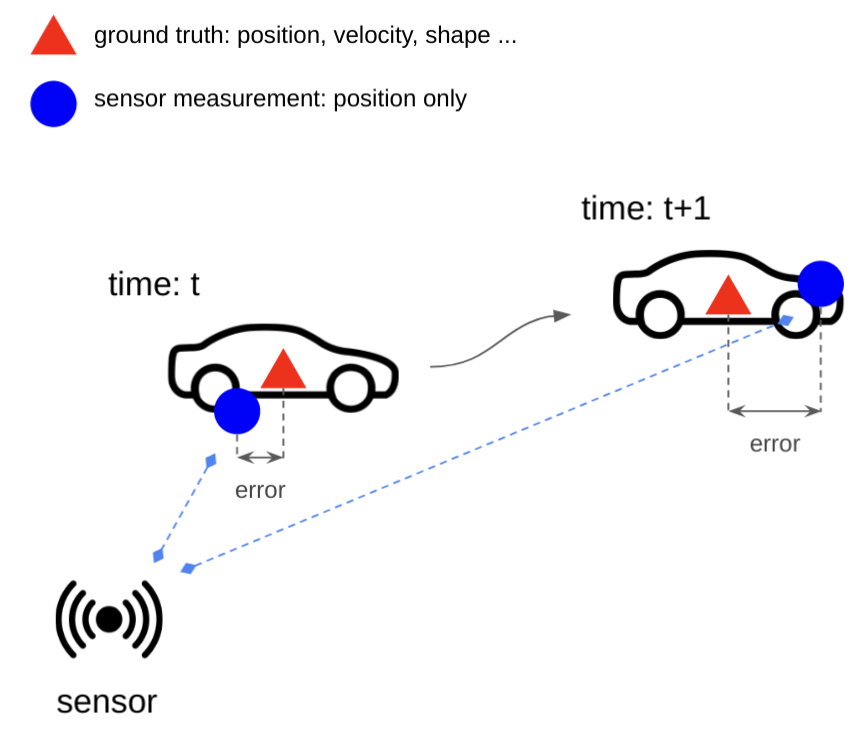

Kalman Filter (작성중)
자율주행 알고리즘 개발을 위한 칼만필터
@Remind
- 내가 아는 Kalman Filter 개념을 다시 정리하기 위해
- 다른 사람에게 설명할 때 유용한 자료로 활용하기 위해
- 수식은 적게 그림은 많게
Prerequisites
- Least Square Method
- Bayes theorem
- Gaussian distribution
Objective: Optimal state estimation
칼만 필터는 많은 분야에서 두루 사용되는 효율적이면서 강건한 알고리즘입니다. 센서에서 측정된 결과로 부터 우리가 알고자 하는 정보를 뽑아내기 위해 사용됩니다.
제가 주로 자율주행 분야의 연구 및 개발을 하면서는 주변 환경 정보를 인식해야 하는 경우가 많습니다. 주변에 있는 물체(차, 사람, 자전거 등)의 위치와 크기, 어떤 방향으로 움직이는지에 대한 정보가 적절하게 주어져야 안전하고 신뢰성 높은 자율주행이 가능합니다.
- 위치
- 크기
- 방향

이때 센서를 통해 얻어진 정보는 일시적인(temporary) 정보가 많습니다. 또한 주변 물체의 동특성을 반영하지 않는 경우가 많습니다. 센서의 정보가 직접적으로 우리가 관측하고자 하는 결과를 포함하지 않을때도 있습니다. 센서의 오차 역시 무시할 수 가 없습니다.
이때 칼만필터는 연속적으로 측정된 센서의 값(measurement)과 우리가 알고자 하는 값(state)이 있을 때 센서 측정값과 우리가 알고자하는 값 사이의 관계(measurement model), 측정값이 어떤 동특성(transition model)을 가지고 있는지를 정의하고 이 관계속에서 가장 좋은(optimal) 값을 찾는 것을 목표로 합니다.
- measurement
- state
- measurement model
- transition model
Uncertainty of *
칼만필터를 통해 얻어지는 결과를 우리는 최적값(optimal state)이라고 합니다. 이때 간과해서 안되는 부분이 최적값은 정확한 값은 아니라는 것입니다. 칼만필터를 통해 얻어지는 결과는 센서의 불확실성(uncertainty of measurement), 관측하고자 하는 값 사이의 관계들의 불확실성(uncertainty of process)을 고려한 최적값입니다. 이러한 불확실성은 말 그대로 불확실하기 때문에 정확할 수 없고 따라서 얻어지는 최적값도 불확실성을 갖게 됩니다. 이러한 불확실성의 정도를 우리는 임의로 조정하게 되는데 여기서 칼만필터의 결과가 크게 달라지게 됩니다. 그래서 칼만필터를 제대로 활용하기 위해서는 이러한 불확실성이 어떻게 칼만필터에 영향을 주는지, 칼만필터는 이러한 불확실성을 어떻게 다루는지 잘 이해해야 합니다.
Advantages of Kalman filter
제가 생각하는 칼만필터는 위의 서술한 내용만으로도 충분하며 다라고 해도 부족함이 없다고 생각합니다. 하지만 실무에 사용할 때에는 아래와 같은 장점들도 중요하게 여겨집니다. 본 글에서는 크게 다루지는 않을 예정입니다. 칼만필터를 이해하면 당연한 내용들이기 때문입니다.
- 메모리 효율성
- 빠른 계산
Assumption
예를 들어 차량의 속도를 측정하는 센서가 있다고 해봅시다. 센서에서 들어오는 속도는 많은 오차를 포함하고 있습니다. 그런데 우리는 차량의 가속도의 크기의 최대값 혹은 최소값을 알 수 있다면 이 말도 안되는 오차도 어느정도 줄일수 있지 않을까요? 혹은 센서에서 들어오는 속도값이 항상 일정한 비율의 오프셋이 있다거나 크기의 비가 조정되어 있다면 이런 부분을 고려해 좀 더 정확한 측정값을 유추해 볼 수 있겠죠? 문제는 이러한 가속도의 크기의 최대값/최소값, 센서의 속도의 오프셋, 스케일링 등과 같은 우리의 지식이 항상 정확하지 않다는 것입니다. 정확한 수식으로 나타낼 수 없죠. 칼만필터는 이러한 불확실성을 가우시안 분포로 가정을 합니다. 가우시안 분포로 가정하므로서 재귀적으로 보정과 예측의 단계를 통해 최적화된 값을 얻을 수 있게 합니다.
- 시스템(model)은 선형이다.
- 시스템(model)은 Gaussian distribution이다.
Random Process
Linear System
Reference
- 아직도 코드 짤때 찾아보는 위키백과 https://ko.wikipedia.org/wiki/칼만_필터
- 명강의
- https://gaussian37.github.io/ad-ose-lkf_basic/
- https://medium.com/@celinachild/kalman-filter-소개-395c2016b4d6